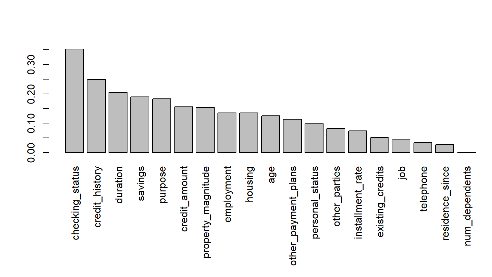
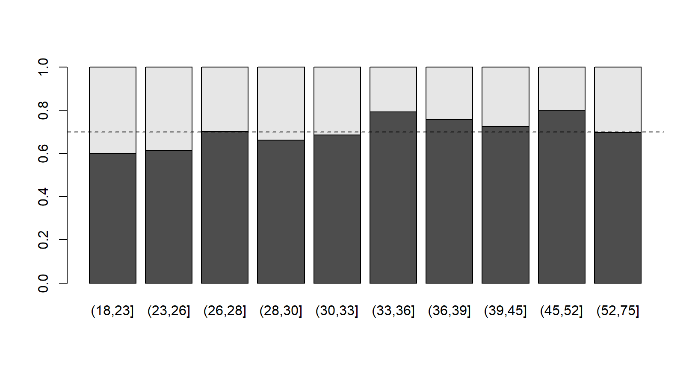

Aprendizagem Estatística
o que é?
por que vamos usar?
Exemplo de Análise de Crédito
análise descritiva
medidas de correlação
14 de abril de 2023
Aula de Hoje
Aprendizagem Estatística
Aprendizagem Estatística
O que é Aprendizagem Estatística?
- Ação de aprender com os dados para fazer predições baseadas em algumas características.
- Ação de aprender com os dados para fazer predições baseadas em algumas características.
- Como vamos fazer isso?
- Vamos usar um banco de treinamento para ajustar um modelo.
- Queremos um modelo que forneça predições precisas para a nossa variável de interesse.
Aprendizagem Estatística
Esse é um procedimento comum para Ciências Atuariais:
se um segurado vai contratar uma cobertura adicional;
se um segurado será representado por um advogado no processo contra terceiros;
se um segurado terá uma determinada doença;
se um cliente irá pagar um empréstimo ou não.
Aprendizagem Estatística
Vamos ver algumas técnicas aplicadas a um banco de dados para análise de crédito.
A variável resposta de interesse nesse caso é binária, se o cliente vai pagar ou não o empréstimo.
Podemos estender essas técnicas para prever outros tipos de variáveis.
Banco de Dados - Análise de Crédito
Banco de Dados
- Dados de 1000 contratos de empréstimo na Alemanha. Banco:
creditdo pacoteCASdatasets.
require(CASdatasets) data(credit) names(credit)
## [1] "checking_status" "duration" "credit_history" ## [4] "purpose" "credit_amount" "savings" ## [7] "employment" "installment_rate" "personal_status" ## [10] "other_parties" "residence_since" "property_magnitude" ## [13] "age" "other_payment_plans" "housing" ## [16] "existing_credits" "job" "num_dependents" ## [19] "telephone" "foreign_worker" "class"
Banco de Dados
- Clientes interessados em pegar um empréstimo poderão ser analisados de acordo com 20 variáveis:
checking_status: saldo da conta corrente (categórica: negativo, 0-200, >200, não tem/desconhecido)
duration: duração do empréstimo (numérica)
credit_history: histórico em empréstimos (categórica: já atrasou pagamento, conta crítica, nunca pegou/pagou corretamente, pagamentos em dia, empréstimo pago)
purpose: motivo do empréstimo (categórica: carro novo, carro usado, mobília/equipamento, rádio/TV, eletrodomésticos, reforma, educação, férias, treinamento, negócios, outros)
Banco de Dados
credit_amount: valor do empréstimo (numérica)
savings: saldo da poupança (categórica: <100, 100-500, 500-1000, >1000, não tem/desconhecido)
employment: empregado há quanto tempo (categórica: desempregado, menos de 1 ano, 1-4 anos, 4-7 anos, mais de 7 anos)
installment_rate: porcentagem da prestação em relação ao salário (categórica: >35, 25-35, 20-25, <20)
personal_status: estado civil e sexo (categórica: masc. e divorciado, fem. e divorciada ou casada, masc. solteiro, masc. casado ou viúvo, fem. solteira)
Banco de Dados
other_parties: outros devedores ou garantidores (categórica: nenhum, co-requerente, garantidor)
residence_since: tempo em que mora na atual residência (categórica: <1 ano, 1-4 anos, 4-7 anos, >7 anos)
property_magnitude: patrimônio (categórica: casa própria, previdência privada/seguro de vida, carro ou outros, não tem/desconhecido)
age: idade (numérica: em anos)
other_payment_plans: outros empréstimos (categórica: em outro banco, em lojas, nenhum)
Banco de Dados
housing: moradia (categórica: aluguel, casa própria, mora de “favor”)
existing_credits: número de empréstimos nesse banco incluindo este (categórica: 1, 2-3, 4-5, 6+)
job: tipo de emprego (categórica: desempregado/sem qualificação sem residência permanente, sem qualificação com residência permanente, qualificado/funcionário, autônomo/gerente)
num_dependents: número de dependentes (categórica: 0-2, 3+)
telephone: tem conta de telefone no seu nome (categórica: sim ou não)
foreign_worker: é estrangeiro (categórica: sim ou não) - seguindo o livro, não vamos incluir essa variável na nossa análise.
Banco de Dados
- Variável resposta
class: indicadora se bom (0) ou mau (1) cliente.
table(credit$class)
## ## 0 1 ## 700 300
Banco de Dados
- Salve sua versão do script da aula de hoje, vamos editar o código durante a aula.
Exercício:
Carregue o banco de dados e execute os comandos até aqui.
Verifique o tipo (categórica ou numérica) de cada variável.
Análise Decritiva
Análise Descritiva - Correlação
A maioria das variáveis é categórica.
Uma maneira de medir a correlação entre variáveis categóricas é a estatística V de Cramer:
\[V = \sqrt{\frac{\chi^2}{n(k-1)}} \]
onde \(\chi^2=\sum _{i,j}{\frac {\left(n_{ij}-{\frac {n_{i.}n_{.j}}{n}}\right)^2}{\frac {n_{i.}n_{.j}}{n}}}\) é a estatística de Pearson para teste de independência, \(n\) é o número de observações e \(k\) é menor número de categorias entre as duas variáveis.
- O p-valor é o mesmo calculado para o teste \(\chi^2\) de Pearson.
Análise Descritiva - Correlação
- Queremos analisar a correlação entre as
covariáveis do banco e a
variável resposta
class(se é bom cliente ou não).
Análise Descritiva - Correlação
- Vamos discretizar as covariáveis
duration,credit_amounteagepara calcular a mesma correlação para todas as covariáveis.
## discretizando as covariáveis contínuas credit.f = credit credit.f$age = cut(credit.f$age,c(0,25,Inf)) credit.f$credit_amount = cut(credit.f$credit_amount,c(0,4000,Inf)) credit.f$duration = cut(credit.f$duration,c(0,15,36,Inf))
Análise Descritiva - Correlação
Exercício:
Verifique a distribuição das variáveis
duration,credit_amounteageno banco original.Você acha que os intervalos escolhidos para a discretização estão bons?
Análise Descritiva - Correlação
Agora vamos calcular a estatística V de Cramer entre a variável resposta e todas as covariáveis.
Primeiro, vamos criar uma função para calcular a estatística V de Cramer entre cada covariável e
class:
## Estatística V de Cramer cramer = function(i) sqrt(chisq.test(table(credit.f[,i],credit.f$class))$statistic/(length(credit.f[,i]))) ## p-valor pv = function(i) chisq.test(table(credit.f[,i],credit.f$class))$p.value
Análise Descritiva - Correlação
## Calculando V de Cramer para todas as covariáveis
k = ncol(credit.f)-1
CRAMER = data.frame( variable=names(credit)[1:k],
cramerv = Vectorize(cramer)(1:k),
p.value = Vectorize(pv)(1:k) )
vCRAMER = CRAMER[order(CRAMER[,2], decreasing=TRUE),]
Exercício:
Veja o que é o objeto
CRAMERe o objetovCRAMER.O que aconteceu com a 3ª coluna desse objeto depois de ordenar?
Análise Descritiva - Correlação
- Vamos plotar os níveis de correlação com a variável resposta:

Análise Descritiva - Distribuição de X dado Y
- No caso de covariável contínua (e variável resposta discreta), podemos comparar a distribuição condicional de X dado Y:
## comparando a distribuição de idade e duração vs classificação do cliente
aggregate(credit[,c("age","duration")], by=list(class=credit$class), mean)
## class age duration ## 1 0 36.22429 19.20714 ## 2 1 33.96333 24.86000
Análise Descritiva - Distribuição de X dado Y
Exercício:
- Qual outra maneira poderíamos comparar as distribuições das variáveis contínuas para as diferentes classificações de clientes?
Análise Descritiva - Distribuição de Y dado X
- Também podemos visualizar a probabilidade de \(Y=1\) para algum valor \(x\) de X, ou para alguma divisão da variável \(X\):
## classificação de clientes por faixa etária Q = quantile(credit$age,seq(0,1,by=.1)) Q[1] = Q[1]-1 cut.age = cut(credit$age,Q) prop = prop.table(table(cut.age,credit$class),1)
Análise Descritiva - Distribuição de Y dado X
Exercício:
Verifique o que cada linha do código do slide anterior está fazendo.
O que está armazenado no objeto
prop?
Análise Descritiva - Distribuição de Y dado X
- Classificação de clientes bons por faixa etária:

Classificação
Ferramentas para classificação
A variável de interesse \(Y\) é uma variável binária assumindo 0 ou 1.
O nosso objetivo é usar variáveis explicativas \(\boldsymbol X\) para fazer predição de \(Y\), baseado em uma função contínua de classificação \(S(\boldsymbol X) \in [0,1]\).
A predição então será:
\[\hat{Y} = \begin{cases} 1 & \mbox{ se } S(\boldsymbol X) \geq s \\ 0 & \mbox{ se } S(\boldsymbol X) < s \end{cases} \]
para algum limite \(s \in (0,1)\).
- Depois, podemos comparar os valores verdadeiros com os estimados (teoria de decisão), e medir os erros cometidos.
Ferramentas para classificação
- O limite \(s\) será escolhido para minimizar os erros do tipo I e tipo II.

Ferramentas para classificação
Uma ferramente tradicional para verificar modelos de classificação é a curva ROC:
- gráfico da taxa de verdadeiros positivos (sensibilidade) versus a taxa de falsos positivos (1-especificidade) para diferentes valores de \(s\).
- gráfico da taxa de verdadeiros positivos (sensibilidade) versus a taxa de falsos positivos (1-especificidade) para diferentes valores de \(s\).
Seção 4.1.3: Exemplo de modelo probit, curva ROC e como avaliar os classificadores.